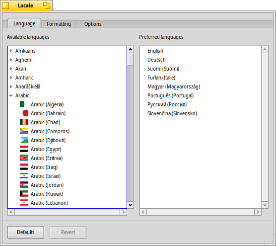
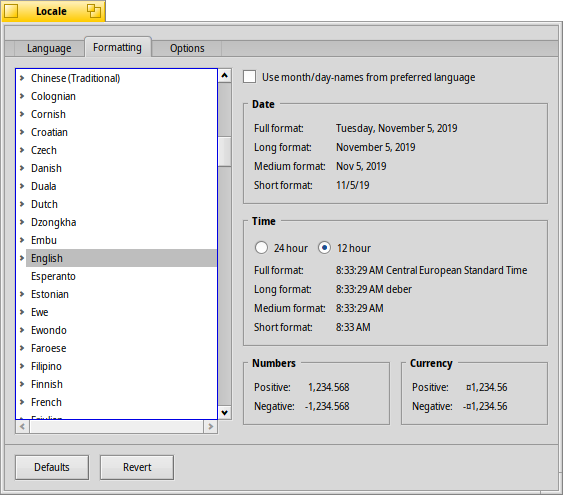

日本語
日本語 Français
Français Deutsch
Deutsch Italiano
Italiano Русский
Русский Español
Español Svenska
Svenska Українська
Українська 中文 ［中文］
中文 ［中文］ Português
Português Suomi
Suomi Slovenčina
Slovenčina Magyar
Magyar Português (Brazil)
Português (Brazil) English
English ロケール (Locale)
ロケール (Locale)
| Deskbar メニュー: | ||
| 場所: | /boot/system/preferences/Locale | |
| 設定ファイル: | ~/config/settings/Locale settings |
Haiku のローカライズシステムは、テキストを訳文に置き換えることだけでなく、数値、日付、および時間をロケール設定に合うやり方で書式設定するような複雑なタスクを含んでいます。
 言語
言語
Haiku は数十の言語に翻訳されてきています。残念なことに、いくつかの翻訳は完全ではありません。したがって、ひとつ以上の言語を、“言語の優先順位 (Preferred languages)” として選択できます。もし、あるテキストの翻訳がない場合、それは、次の優先言語の訳と置き換わります。英語はデフォルトの代替言語です (リストに無い場合も同様)。
この例では、優先言語はスペイン語に設定されています。最初の代替言語はイタリア語で、テキストがここにもない場合、デフォルトの英語に戻ります。
ご覧のように、左側の言語の項目を展開すると、(利用できる場合) 言語の特異的変異、つまり方言のサブ項目が現れます。
書式設定
タブでは、日付、時刻、数値、および通貨のフォーマットを優先言語の設定とは独立して設定できます。
あなたは、イタリアのスイス語圏に住むスペイン人かもしれません。なので、システムの言語はスペイン語にしたいでしょう。しかし、数字と通貨は職場のようにスイス/イタリアの書式にします。
もし、スペイン語の日付および月名により満足していれば (例として、ファイルの修正日を考えてください) 、この時間特有の書式を一番上にある チェックボックスを使って上書きできます。
たしかに、上記の例はよくある例ではないかもしれませんが、システムの柔軟性を示しています。
オプション
最後のタブには、 オプションがあります。もし、グラフィカルインターフェースはローカライズして、プレファレンスパネル、アプリケーション、または標準のフォルダー名を元の英語のままにしておきたい場合は、チェックボックスを無効にしてください。
変更は直ちに適用されます。しかし、実行中のアプリケーションは、新しい設定を表示する前に終了して再起動が必要になるかもしれません。
| すべてをデフォルト値にリセットします。 | ||
| ロケールプリファレンスを起動したときに有効であった設定に戻します。 |